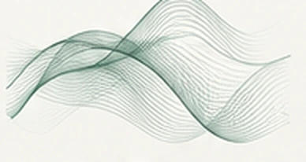
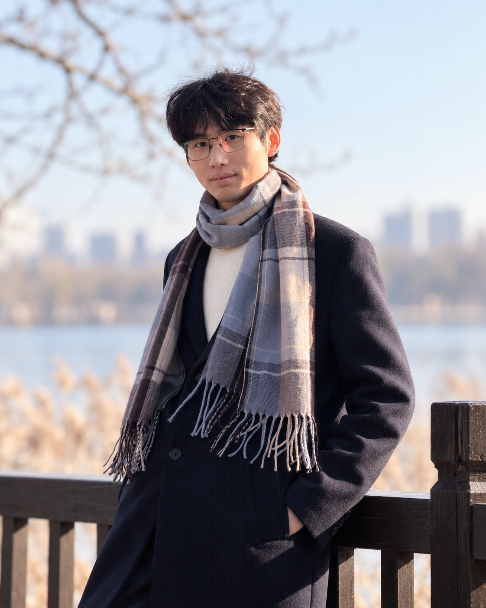
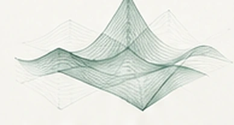
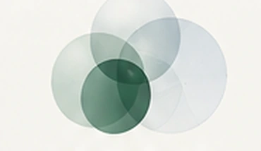
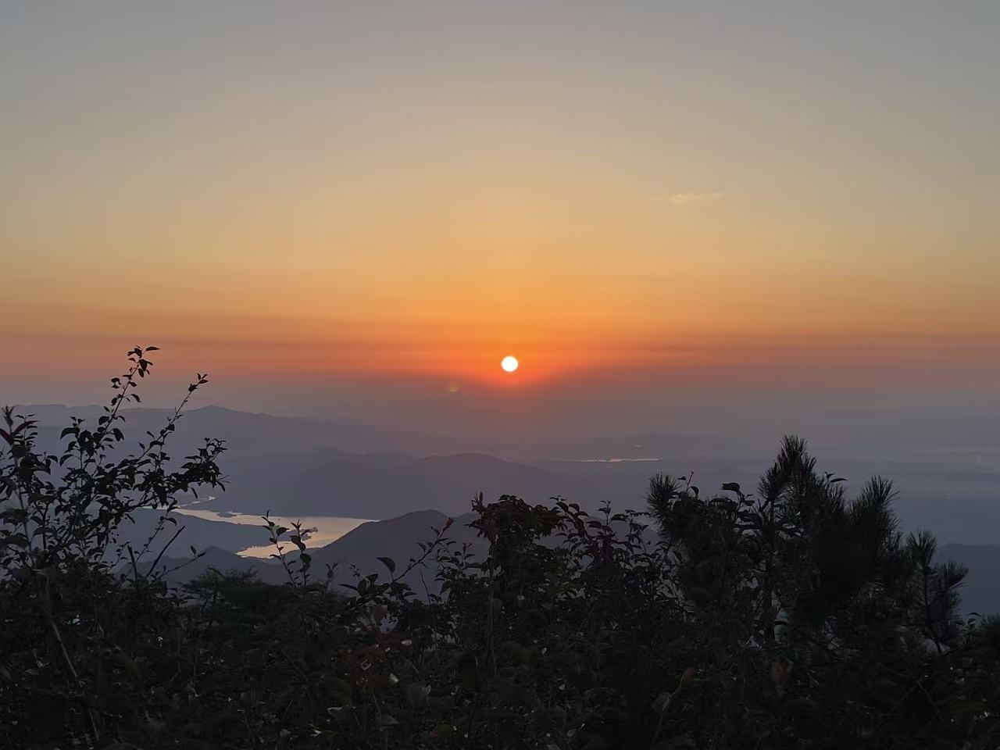
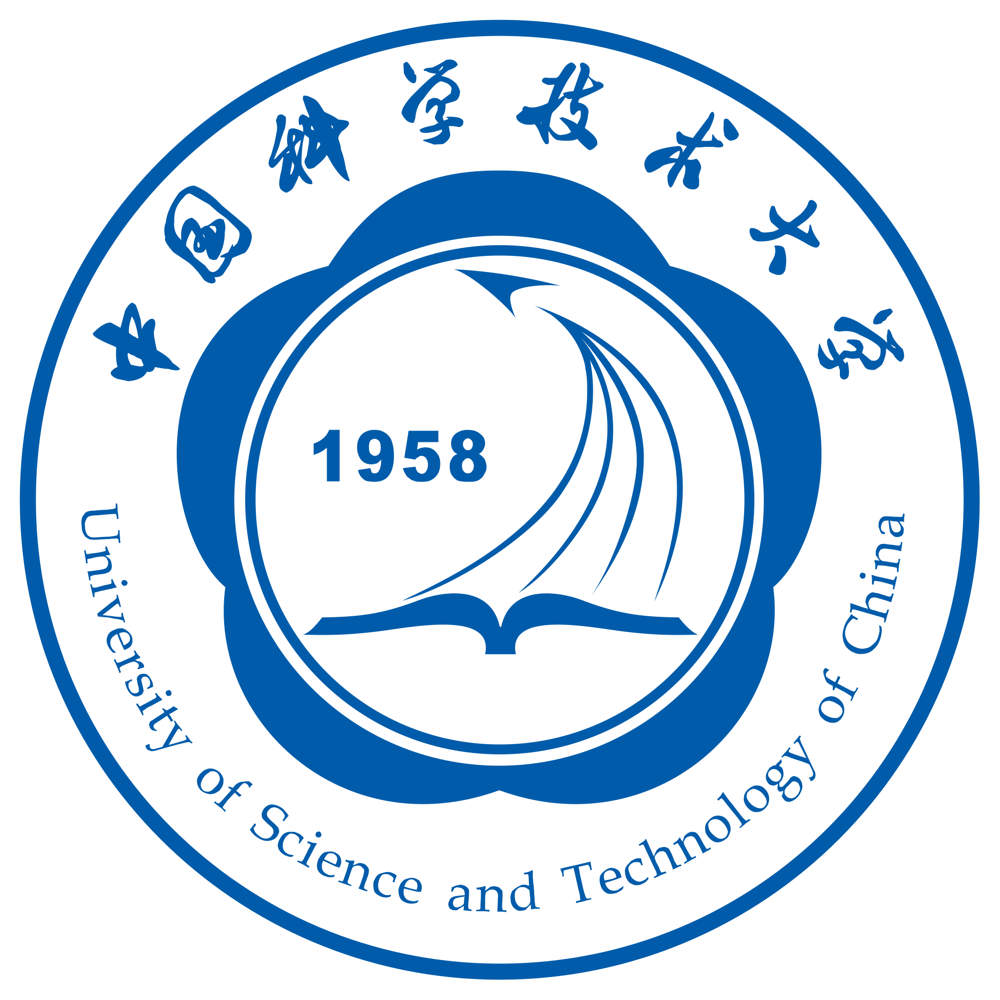
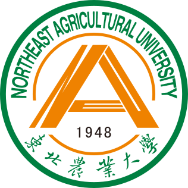

AI for Science
人工智能驱动的科学研究
Linking physical insight and AI to explore scientific models, test hypotheses, and discover mechanisms.
耿仁义
You can also call me Rony.
M.S. Student · Polymer Physics · University of Science and Technology of China
Research at Changchun Institute of Applied Chemistry (CIAC)
以好奇心驱动探索，在人工智能与自然科学的交汇处开展研究。
I am interested in AI for Science, scientific reasoning, and intelligent scientific discovery. I hope to explore how AI can help us ask meaningful scientific questions and better understand the natural world.


人工智能驱动的科学研究
Linking physical insight and AI to explore scientific models, test hypotheses, and discover mechanisms.
科学智能体
Exploring simulation-oriented agents that design computational studies, orchestrate scientific tools, and iteratively verify results.

低数据材料发现
Using literature knowledge and limited experimental data to guide reliable polymer and peptide material screening.

实验反馈驱动的生物材料设计
Connecting AI-guided candidate selection with experimental characterization and feedback to improve biomaterial design.

I'm Renyi Geng (Rony), a master's student focusing on polymer physics at the University of Science and Technology of China (USTC), conducting research at the Changchun Institute of Applied Chemistry (CIAC).
I grew up in Tai'an, Shandong. I began learning programming in high school and later studied Food Science and Engineering at Northeast Agricultural University, where I joined the honors training program.
My interests lie in AI for Science, from scientific agents and computational research to data-efficient materials discovery informed by experiments. I hope to become an independent researcher who approaches meaningful scientific questions with curiosity and rigor.
我是耿仁义（Rony），成长于山东泰安。现为中国科学技术大学高分子物理硕士研究生，在中国科学院长春应用化学研究所开展科研工作。
我从高中时期开始接触编程，本科就读于东北农业大学食品科学与工程专业，并接受拔尖人才创新班培养。
目前主要关注 AI for Science，包括科学智能体、低数据条件下的材料发现，以及与实验反馈相结合的生物材料设计。我希望从有意义的科学问题出发，逐步成长为能够独立提出问题、严谨开展研究的科研工作者。

USTC中国科学技术大学
M.S. Student · Polymer Physics · Research at CIAC

NEAU东北农业大学
B.Eng. in Food Science and Engineering · Honors Training Program
Trends in Food Science & Technology · 172 (2026) · 105721
Reviewing AI techniques, applications and future directions in cheese manufacturing.
Food Bioscience · 61 (2024) · 104977
Investigating how milk powder storage by-products affect probiotic metabolism and transcriptional responses.
Public notes appear here after GitHub Pages builds the site.
I am always happy to exchange ideas about AI for Science, scientific reasoning, and interdisciplinary research. Feel free to reach out for a conversation or collaboration.